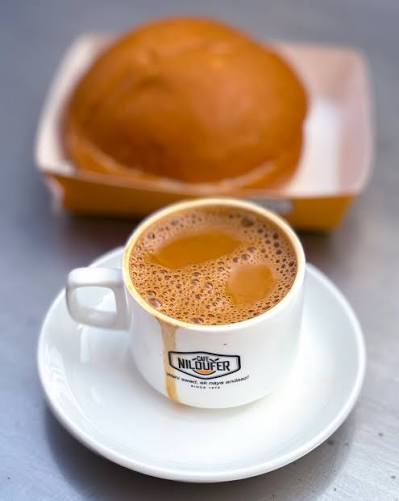

Café Niloufer
↗ Lakdikapul, Hyderabad
I had Irani chai & Osmania biscuits
That first cup never seemed to be the last. The Osmania biscuit was part of the plan; staying for hours wasn’t.
 tiredrice
tiredrice
my little food diary
Mostly Hyderabad. Sometimes elsewhere.


↗ Lakdikapul, Hyderabad
I had Irani chai & Osmania biscuits
That first cup never seemed to be the last. The Osmania biscuit was part of the plan; staying for hours wasn’t.

↗ Hyderabad
I had Chai
Sweeter than Niloufer’s, and its flavour lingers long after the cup is empty. I like this one even more.

↗ Hyderabad
I had Chicken biryani
Quick, hot, and dependable. When I’m hungry and want a proper plate of chicken biryani without overthinking it, Mehfil is the easy call.

↗ Hyderabad
I had Chicken biryani
Same chicken-and-rice comfort, but with a much bigger kick and a flavour of its own. I go for it when regular dum biryani feels too mild.

↗ Mathrusree Nagar
I had Chaat
Chaat from the Mathrusree Nagar bandi: crunchy, tangy, spicy, and hard to stop picking at. One of my Hyderabad favourites.

↗ Hyderabad
I had Fried rice
The fried rice I keep going back to—hot, savoury, and properly filling. Sometimes that’s all I need from dinner.

↗ Hyderabad
I had Mint chocolate chip ice cream
Cool mint with little chocolate chips in every spoonful. Exactly the scoop I want when I’m in the mood for something cold and sweet.
↗ Hyderabad
I had Chitti bonda & prawn upma
A few little chitti bondas, then prawn upma when a snack clearly isn’t enough. Two different cravings, sorted in one stop.

↗ Hyderabad
I had Prawns pulao
Fragrant, spiced rice with prawns tucked through the plate. Prawn pulao is the order I remember from One Drive In.

↗ Hyderabad
I had Ponganalu
Golden-edged, soft-centred ponganalu cooked with ghee and served with chutney. A little South Indian tiffin plate I’m glad I tried.

↗ Hyderabad
I had Death by Chocolate
Brownie, vanilla ice cream, chocolate fudge, and crunchy nuts all piled into one bowl. Definitely not a subtle chocolate dessert.
No bites found. Try another place or dish.